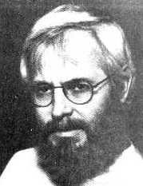
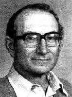
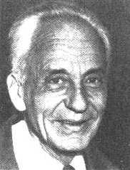
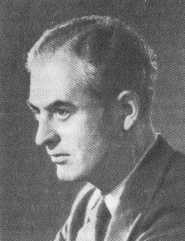
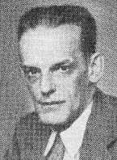
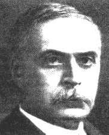
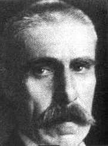
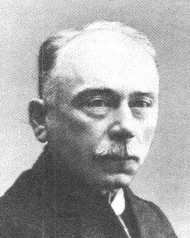
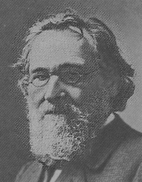
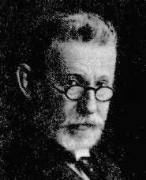

ИММУНОЛОГИ — НОБЕЛЕВСКИЕ ЛАУРЕАТЫ


За открытие клеточно-опосредованного компонента иммунного ответа.

За открытие генетических основ разнообразия антител.



За оригинальную теорию специфичности в развитии и регуляции иммунной системы и за открытие принципа продукции моноклональных антител.



За открытия генетически детерминированных структур клеточной мембраны, регулирующих иммунологические реакции.

За разработку принципа радиоиммунологического анализа пептидных гормонов.


За работы, раскрывающие новые механизмы возникновения и распространения инфекционных заболеваний (прионы).


За открытие химической структуры антител.


За открытие явления приобретенной иммунотолерантности.


За открытие способности вируса полиомиелита культивироваться в тканевых культурах, ставшее основой для прорыва в профилактике этого заболевания.

За исследования желтой лихорадки и разработку вакцины против нее.

За открытие групп крови человека.

За открытие терапевтического эффекта прививок малярии в лечении прогрессивного паралича (прообраз цитокиновой иммуностимуляции).

За открытие системы комплемента и механизмов иммунитета.

За работы по исследованию анафилаксии.

За работы по пересадке кровеносных сосудов и органов и разработку сосудистого шва.


В ознаменование их выдающегося вклада в создание теоретических основ иммунологии.

В знак признания его работ о значении простейших как возбудителей болезней.

За исследования и открытия в области этиологии и диагностики туберкулеза.

За фундаментальные исследования механизмов передачи малярии.

За работы по серотерапии (в особенности дифтерии), открывшие принципиально новый путь борьбы с инфекциями.